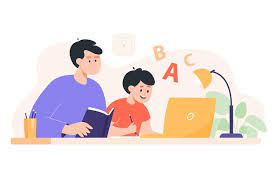
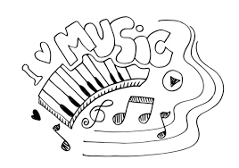
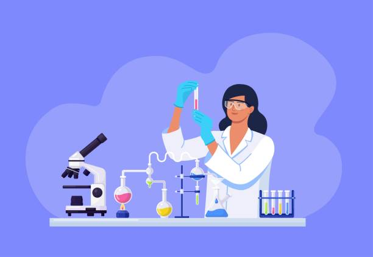

Curiosidades

Atual experiência profissional: Aluno Monitor do Bem
Sobre meu atual trabalho e minhas experiências dentro do projeto Aluno Monitor do Bem, incluindo uma breve analíse de seus desafios e benefícios.

Meus passatempos e habilidades fora do âmbito profissional
Sobre o que gosto de fazer em momentos livres e algumas habilidades do cotidiano.

Meus planos futuros
Meus objetivos para o futuro a curto, médio e longo prazo, incluindo projetos pessoais e profissionais.